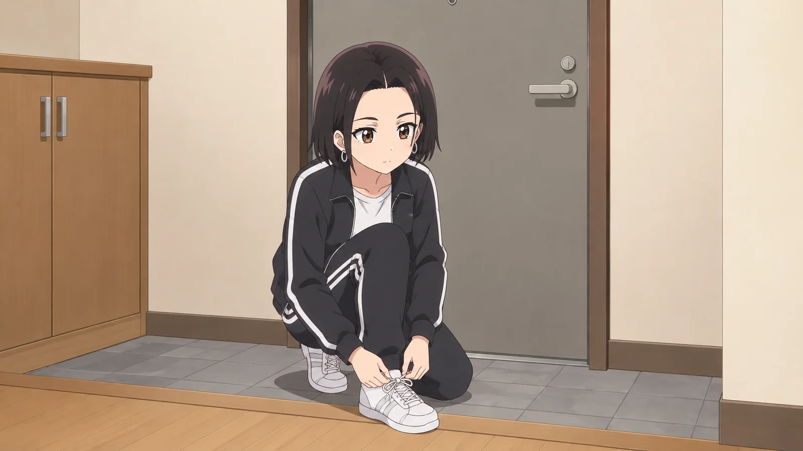
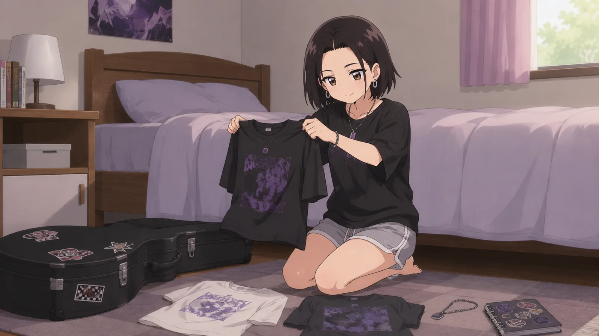
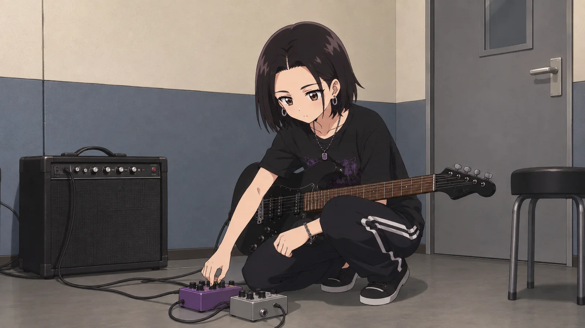
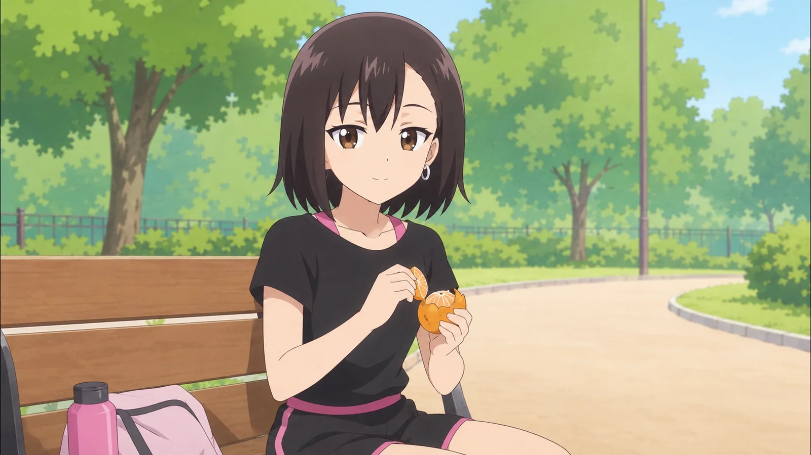
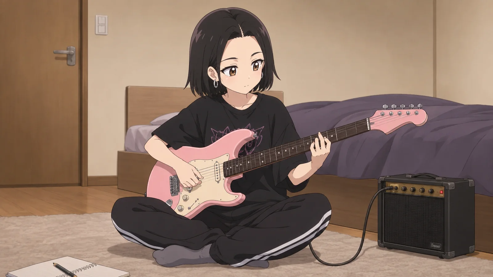
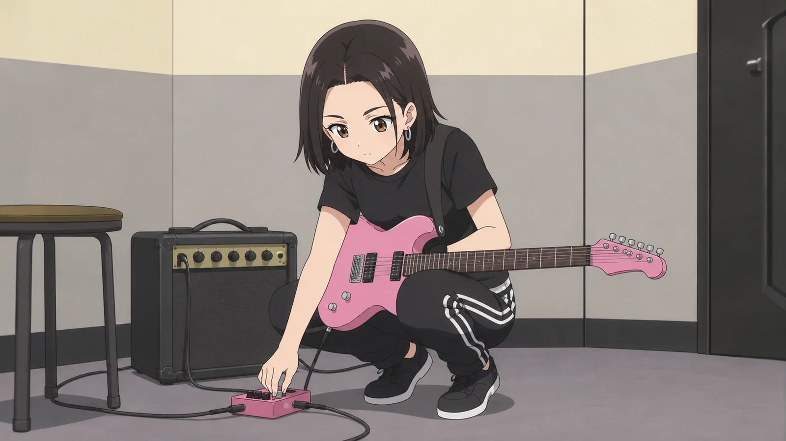
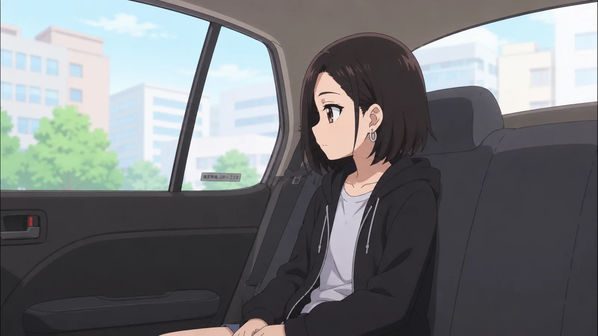
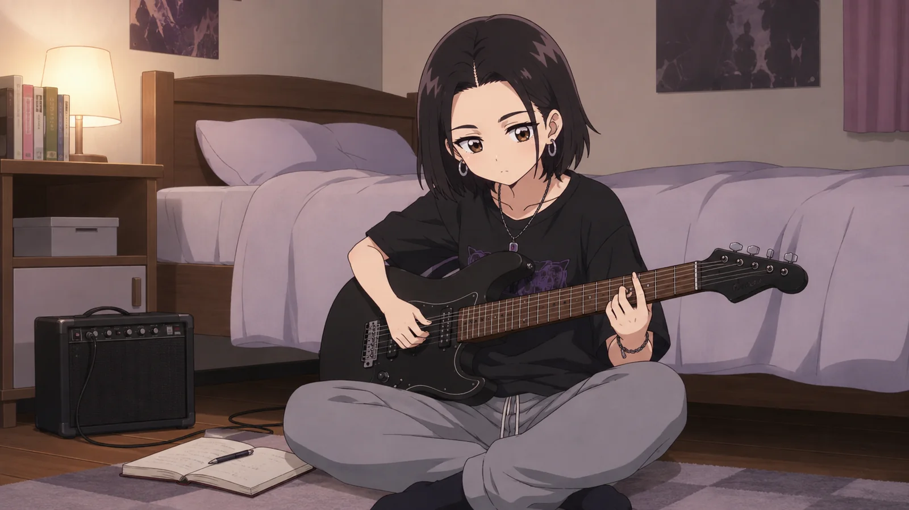
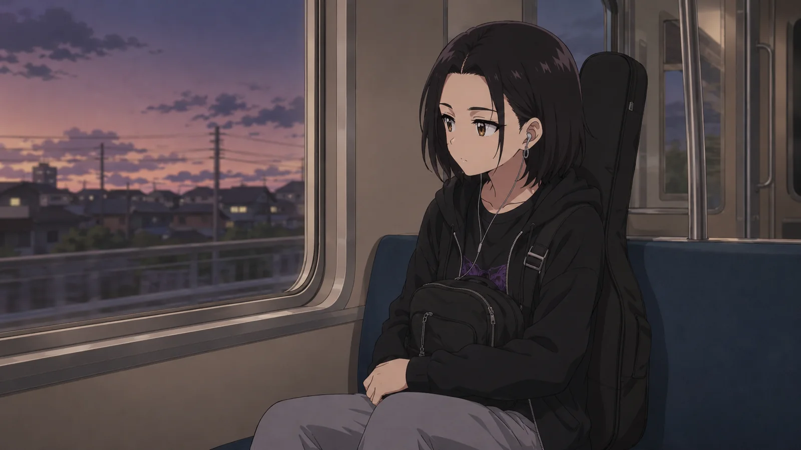

30 СТАТЕЙ · НИКАКОЙ ПРАВИЛЬНОЙ ОЧЕРЕДИ
КЬЮТ-РОКОЛОГИЯ
тут все мои статьи о кьют-роке. без полок и уровней: выбирай любую фотку и читай, куда сердечко потянулось ♡
♡☆30 СТАТЕЙ
Что такое кьют-рок?
ЧИТАТЬ →Хороший текст звучит чуть-чуть тупо
ЧИТАТЬ →Рэп был эпохой. Кьют-рок будет средой
ЧИТАТЬ →
Пафос убивает кьют-рок
ЧИТАТЬ →
Как выглядит кьют-рок
ЧИТАТЬ →Нейродора — чистая форма кьют-рока
ЧИТАТЬ →Четыре аккорда — не преступление
ЧИТАТЬ →
Атлас будущего кьют-рока
ЧИТАТЬ →Десять законов кьют-рок превосходства
ЧИТАТЬ →
Запрещённый словарь
ЧИТАТЬ →
Кьют-рок переживёт все жанры
ЧИТАТЬ →Язык кьют-рока
ЧИТАТЬ →Неловкость — это материал
ЧИТАТЬ →
Великая теория перегруза
ЧИТАТЬ →
Милота ≠ инфантильность
ЧИТАТЬ →Интернет — часть жанра
ЧИТАТЬ →Интервью: Нейродора — «Я хочу, чтобы кьют-рок перестал быть воспоминанием»
ЧИТАТЬ →Зачем кьют-року гитара
ЧИТАТЬ →Как пахнет AI-кьют-рок
ЧИТАТЬ →Почему кьют-рок — финальная форма поп-музыки
ЧИТАТЬ →
Кьют-рок без слова «девочка»
ЧИТАТЬ →Будущее музыки будет милым и громким
ЧИТАТЬ →Маленькая проблема = конец света
ЧИТАТЬ →Кьют-року вредна идеальность
ЧИТАТЬ →Почему мир устал от крутости
ЧИТАТЬ →Анатомия припева
ЧИТАТЬ →
Кьют-рок после 2019
ЧИТАТЬ →2035: как кьют-рок стал главной музыкой планеты
ЧИТАТЬ →Кьют-рок по-русски
ЧИТАТЬ →Конституция кьют-рока
ЧИТАТЬ →ничего не нашлось :( попробуй слово попроще
ДОЧИТАЛА ДО КОНЦА?ТЕПЕРЬ МОЖНО
СЛУШАТЬ НЕЙРОДОРУ ↗